U.S. investment already on the books
Year-end positions from 2000 through 2025, the latest year in BEA's July 2026 release. These are nominal dollar positions, not annual flows or company counts. Mainland China and Hong Kong are separate, with independent vertical scales. Changes can reflect transactions, exchange rates and other valuation adjustments.
U.S. investment in mainland China
BEA | Year-end positions, 2000-2025
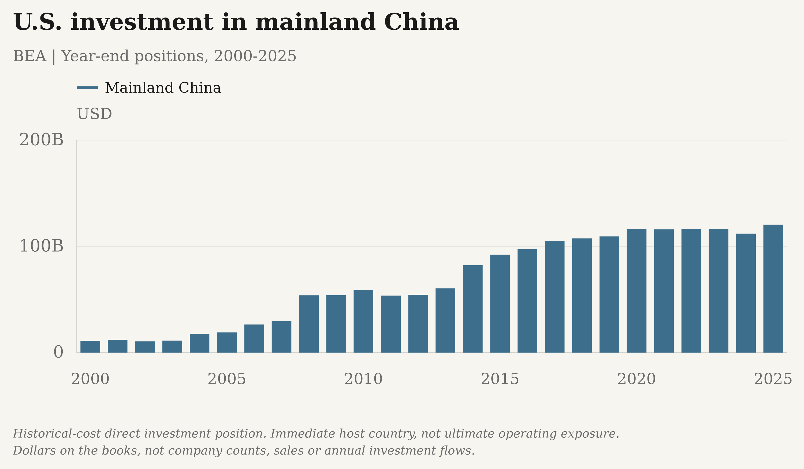
Historical-cost direct investment position. Immediate host country, not ultimate operating exposure. Dollars on the books, not company counts, sales or annual investment flows.
Primary source · Published 2026-07-21
Download reported values as a high-resolution PNG or editable SVG:
- The Margin of Error: PNG (3000 × 1800) · SVG
- Substack: PNG (3000 × 1800) · SVG


U.S. investment in Hong Kong
BEA | Year-end positions, 2000-2025
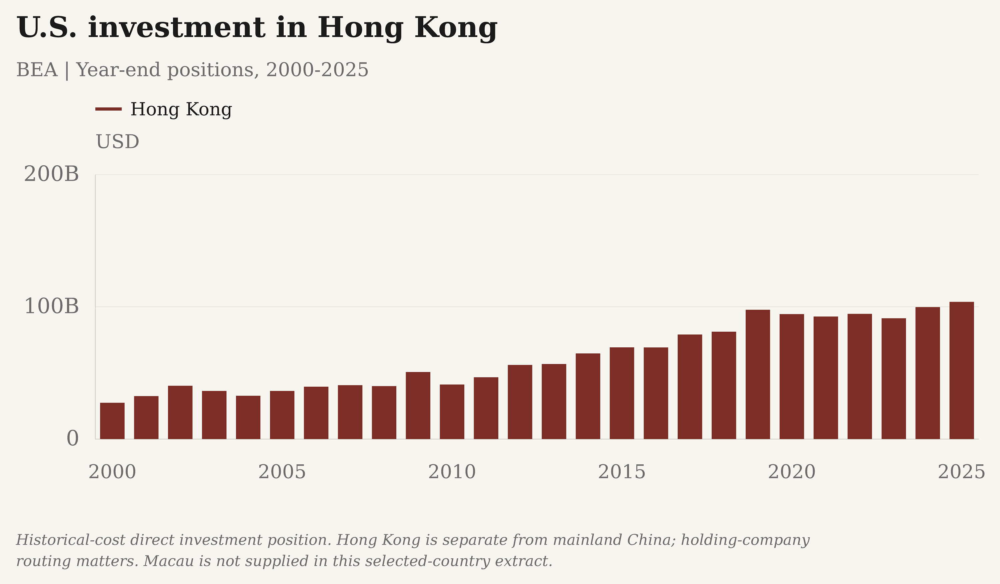
Historical-cost direct investment position. Hong Kong is separate from mainland China; holding-company routing matters. Macau is not supplied in this selected-country extract.
Primary source · Published 2026-07-21
Download reported values as a high-resolution PNG or editable SVG:
- The Margin of Error: PNG (3000 × 1800) · SVG
- Substack: PNG (3000 × 1800) · SVG


China-linked affiliates in the United States
Counts by ultimate beneficial owner, not the immediate foreign parent. Mainland China and Hong Kong are separate, with independent vertical scales. The comparable $20m-threshold history below starts in 2012; earlier observations use different populations.
Mainland China UBO
Majority-owned U.S. affiliates · Country of ultimate beneficial owner
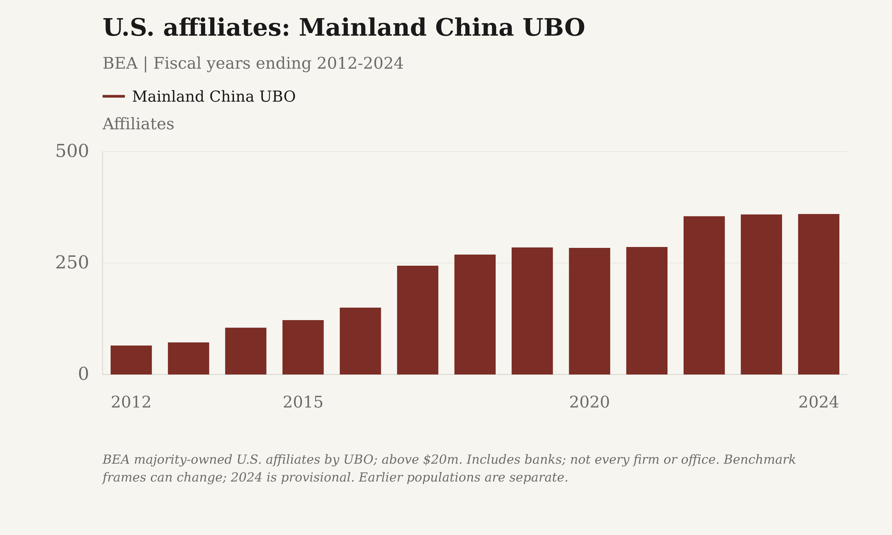
Including banks; assets, sales or net income/loss above $20m. Reporting units, not every legal company or office. Benchmark frames can change; 2024 is preliminary.
Download reported values as a high-resolution PNG or editable SVG:
- The Margin of Error: PNG (3000 × 1800) · SVG
- Substack: PNG (3000 × 1800) · SVG


Hong Kong UBO
Majority-owned U.S. affiliates · Country of ultimate beneficial owner
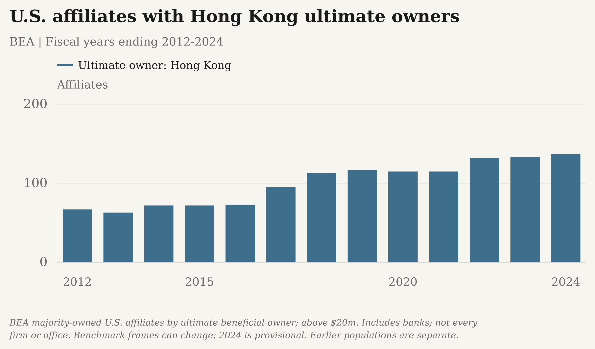
Including banks; assets, sales or net income/loss above $20m. Reporting units, not every legal company or office. Benchmark frames can change; 2024 is preliminary.
Download reported values as a high-resolution PNG or editable SVG:
- The Margin of Error: PNG (3000 × 1800) · SVG
- Substack: PNG (3000 × 1800) · SVG


All reported counts, 2000-2024, and why the definitions matter
The full history has four distinct populations: nonbank above $3m in 2000-01; nonbank above $10m in 2002-06; including banks above $15m in 2007-11; including banks above $20m in 2012-24. The earlier levels are not joined to the current chart as a single comparable trend. Survey benchmarks also update coverage; a change is not necessarily a new firm or an exit. Macau is not supplied by these count tables and is not assigned zero.
Every reported count and source · JSON · All 50 country-year observations · CSV · Current-definition plotted values · CSV
| Fiscal year ending | Mainland China UBO | Hong Kong UBO | Count coverage |
|---|---|---|---|
| 2000 | 25 | 172 | Nonbank only; above $3m |
| 2001 | 28 | 155 | Nonbank only; above $3m |
| 2002 | 11 | 64 | Nonbank only; above $10m |
| 2003 | 10 | 64 | Nonbank only; above $10m |
| 2004 | 12 | 66 | Nonbank only; above $10m |
| 2005 | 14 | 69 | Nonbank only; above $10m |
| 2006 | 11 | 71 | Nonbank only; above $10m |
| 2007 | 14 | 76 | Including banks; above $15m |
| 2008 | 27 | 76 | Including banks; above $15m |
| 2009 | 36 | 79 | Including banks; above $15m |
| 2010 | 45 | 76 | Including banks; above $15m |
| 2011 | 57 | 78 | Including banks; above $15m |
| 2012 | 65 | 67 | Including banks; above $20m |
| 2013 | 72 | 63 | Including banks; above $20m |
| 2014 | 105 | 72 | Including banks; above $20m |
| 2015 | 122 | 72 | Including banks; above $20m |
| 2016 | 150 | 73 | Including banks; above $20m |
| 2017 | 244 | 95 | Including banks; above $20m |
| 2018 | 269 | 113 | Including banks; above $20m |
| 2019 | 285 | 117 | Including banks; above $20m |
| 2020 | 284 | 115 | Including banks; above $20m |
| 2021 | 286 | 115 | Including banks; above $20m |
| 2022 | 355 | 132 | Including banks; above $20m |
| 2023 | 359 | 133 | Including banks; above $20m |
| 2024 | 360 | 137 | Including banks; above $20m |
Original annual tables
- 2000: BEA official archived annual tables: reference year 2000; TabJ3.xls; China B62, Hong Kong B63. SHA-256
0f228665b5e97097eed040bcde97f71fa36d9b170e525e59bfd3bf67ae563033 - 2001: BEA official archived annual tables: reference year 2001; TabJ3.xls; China B62, Hong Kong B63. SHA-256
c646a10b031c08413f27ade6f27686855eb1dd6143117d9dd09777c50149644f - 2002: BEA official archived annual tables: reference year 2002; Tab III.A5.xls; China B96, Hong Kong B97. SHA-256
c4890bd741373250f4ff31856eea4a0fc0a21b020f8496d0c72f42b3946c1f19 - 2003: BEA official archived annual tables: reference year 2003; Tab III.A5.xls; China B92, Hong Kong B93. SHA-256
1b048f6efed6b441f431fa6eeda977ea536b2bd8507113bad12489325b3454eb - 2004: Foreign Direct Investment in the United States (FDIUS): Revised 2004 Data; Tab III.A5.xls; China B93, Hong Kong B94. SHA-256
300f07bbe97d68bedf2864d2c9a58cc1fa7d80fe49102144665ec41bfe113a31 - 2005: Foreign Direct Investment in the United States (FDIUS): Revised 2005 Data; TAB III.A5.xls; China B89, Hong Kong B90. SHA-256
1aa0207527bce5b27cc3187ff2bf18c0b78fffa9d766b277038be3422372bac4 - 2006: Foreign Direct Investment in the United States (FDIUS): 2006 Data Tables; Tab III.A5.xls; China B89, Hong Kong B90. SHA-256
880dd14c17ddff9ba9ba62fb1b33d89beddbb3f3b08ea91b501cf8ce9b535d10 - 2007: Foreign Direct Investment in the United States (FDIUS): Final Results from the 2007 Benchmark Survey; II.A5; China B92, Hong Kong B93. SHA-256
78f616cbe395e727e011556362daffb7469bbd4bcd9686cacff290da3be1aec6 - 2008: Foreign Direct Investment in the United States (FDIUS): Revised 2008 Data; II.A5; China B93, Hong Kong B94. SHA-256
04cf6cb5beb3c583c546ef80e0fd7120277fc4286823232401c8474a69105977 - 2009: Foreign Direct Investment in the United States (FDIUS): Revised 2009 Data; II.A5; China B97, Hong Kong B98. SHA-256
3fc0c652dc9c3dfb4df8fa1fc7cbc46ac4412001d0ae952b323f6e8b2c6d287c - 2010: Foreign Direct Investment in the United States (FDIUS): Revised 2010 Data; II.A5; China B95, Hong Kong B96. SHA-256
c3de88942c4e25691bd62a971cae57cf08a3e2dda063058cf3cadb15bb2debfe - 2011: Foreign Direct Investment in the United States (FDIUS): Revised 2011 Data; II.A5; China B97, Hong Kong B98. SHA-256
7ef6fdec5ec49af86277dc4c72d66c7bad9cd00ef8387b33d6f145d5da4b70d3 - 2012: Foreign Direct Investment in the United States (FDIUS): Final Results from the 2012 Benchmark Survey; II.A5; China B97, Hong Kong B98. SHA-256
c095472a2c65fefe99f7ab2bc641633733060980b5be41d44c8900150609ec1f - 2013: Activities of U.S. Affiliates of Foreign Multinational Enterprises: Revised 2013 Statistics; II.A5; China B96, Hong Kong B97. SHA-256
8d4ef89c372fada03666e3f2350f7525dad5ce3be2a365bde612fef53386a752 - 2014: Activities of U.S. Affiliates of Foreign Multinational Enterprises: Revised 2014 Statistics; II.A5(2); China B31, Hong Kong B32. SHA-256
678cfa680bb819c6853bd931c94d83528282df69382e38b205c61219751597ce - 2015: Activities of U.S. Affiliates of Foreign Multinational Enterprises: Revised 2015 Statistics; II.A5(2); China B30, Hong Kong B31. SHA-256
209cc2ba4fc307158800ebea1325e7688705fc23f604d8d0268d8c305fb2033c - 2016: Activities of U.S. Affiliates of Foreign Multinational Enterprises: Revised 2016 Statistics; II.A5(2); China B30, Hong Kong B31. SHA-256
3e4aefdeb3a89bcb52f78134eb2fc45de592fa2b4c6aec263e94f598d61dc0b2 - 2017: Activities of U.S. Affiliates of Foreign Multinational Enterprises: Revised 2017 Statistics; II.A5(2); China B36, Hong Kong B37. SHA-256
17beb038f2d61b42411e919cea93a986453ec04e92f7bb4132eb2f77d05656bf - 2018: Activities of U.S. Affiliates of Foreign Multinational Enterprises: Revised 2018 Statistics; II.A5(2); China B35, Hong Kong B36. SHA-256
20fd50561189aceca6e068a8bdd28d5716d17c588207f1cef957e95005977fa5 - 2019: Activities of U.S. Affiliates of Foreign Multinational Enterprises: Revised 2019 Statistics; II.A5(2); China B35, Hong Kong B36. SHA-256
cefa937e8ca0a7bd2dcbc578e4cb27002da8e377c3281de1aafab4ba31411ec2 - 2020: Activities of U.S. Affiliates of Foreign Multinational Enterprises: Revised 2020 Statistics; II.A5(2); China B34, Hong Kong B35. SHA-256
d2c51809ef910367bab3c26ba406eb42e0d034809bf1bc4096a03f3046a0f7bd - 2021: Activities of U.S. Affiliates of Foreign Multinational Enterprises: Revised 2021 Statistics; II.A5(2); China B35, Hong Kong B36. SHA-256
4b3d8f5fc13fc10d35b474490f4279634db35aefd27d4d28d47e1970fe4b2da1 - 2022: Activities of U.S. Affiliates of Foreign Multinational Enterprises: Revised 2022 Statistics; II.A5(2); China B36, Hong Kong B37. SHA-256
9bc64336ece508b1547cc11ad2f049d3b0ce59be0d5e822bd09d5974257b9d0f - 2023: Activities of U.S. Affiliates of Foreign Multinational Enterprises: Revised 2023 Statistics; II.A5; China B38, Hong Kong B39. SHA-256
879e8f82d20cae6f8101ae4dbbfb8b3a25d4d167b7deffddfdc01732b3a2c999 - 2024: Activities of U.S. Affiliates of Foreign Multinational Enterprises: Preliminary 2024 Statistics; II.A5; China B38, Hong Kong B39. SHA-256
4b33bbd4a489312c3a8d5282f28b9ca231b1707ec8021873aa9c9b32f95bc203
Affiliates operating in China
Swedish/Finnish/Danish 2024, provisional Dutch 2024 and French/Spanish 2023 counts, with every reported historical year. Separate Finnish- and Swedish-UCI Eurostat histories reach 2007; neither is spliced into the broader national counts. Italian legal-unit counts run from 2007 to 2023; newer grouped-enterprise counts remain separate in downloads. These count subsidiary or affiliate entities, not unique parent companies or offices. Country sources have different ownership, sector and reporting thresholds: they are not a matched ranking or a total to add together. Shorter histories and methodology changes remain explicit.
Swedish-group subsidiaries in China
National annual observations, 2010-2024
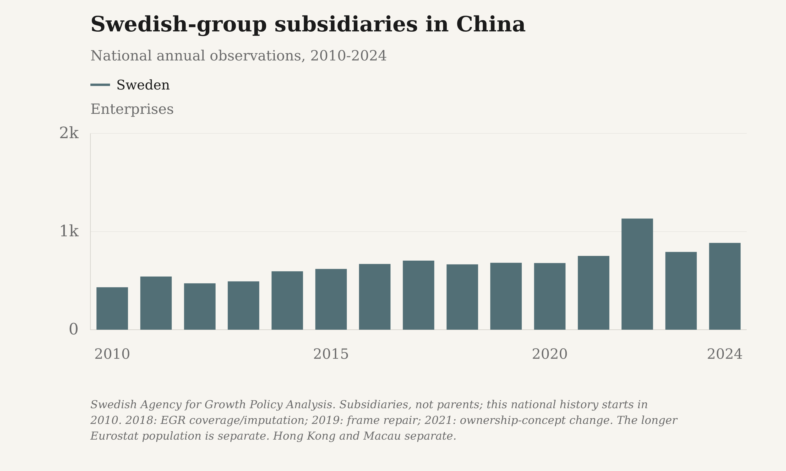
Swedish Agency for Growth Policy Analysis. Subsidiaries, not parents; this national history starts in 2010. 2018: EGR coverage/imputation; 2019: frame repair; 2021: ownership-concept change. The longer Eurostat population is separate. Hong Kong and Macau separate.
Download reported values as a high-resolution PNG or editable SVG:
- The Margin of Error: PNG (3000 × 1800) · SVG
- Substack: PNG (3000 × 1800) · SVG


Exact reported and plotted values
| Series | Year / ending year | Reported count | Enterprises | Status | Source vintage |
|---|---|---|---|---|---|
| Sweden | 2010 | 433 | 433.0000 | observed | 2024 survey; published 15 September 2026; quality declaration 14 September 2026 |
| Sweden | 2011 | 542 | 542.0000 | observed | 2024 survey; published 15 September 2026; quality declaration 14 September 2026 |
| Sweden | 2012 | 473 | 473.0000 | observed | 2024 survey; published 15 September 2026; quality declaration 14 September 2026 |
| Sweden | 2013 | 493 | 493.0000 | observed | 2024 survey; published 15 September 2026; quality declaration 14 September 2026 |
| Sweden | 2014 | 595 | 595.0000 | observed | 2024 survey; published 15 September 2026; quality declaration 14 September 2026 |
| Sweden | 2015 | 619 | 619.0000 | observed | 2024 survey; published 15 September 2026; quality declaration 14 September 2026 |
| Sweden | 2016 | 670 | 670.0000 | observed | 2024 survey; published 15 September 2026; quality declaration 14 September 2026 |
| Sweden | 2017 | 704 | 704.0000 | observed | 2024 survey; published 15 September 2026; quality declaration 14 September 2026 |
| Sweden | 2018 | 666 | 666.0000 | observed | 2024 survey; published 15 September 2026; quality declaration 14 September 2026 |
| Sweden | 2019 | 682 | 682.0000 | observed | 2024 survey; published 15 September 2026; quality declaration 14 September 2026 |
| Sweden | 2020 | 679 | 679.0000 | observed | 2024 survey; published 15 September 2026; quality declaration 14 September 2026 |
| Sweden | 2021 | 752 | 752.0000 | observed | 2024 survey; published 15 September 2026; quality declaration 14 September 2026 |
| Sweden | 2022 | 1,133 | 1,133.0000 | observed | 2024 survey; published 15 September 2026; quality declaration 14 September 2026 |
| Sweden | 2023 | 793 | 793.0000 | observed | 2024 survey; published 15 September 2026; quality declaration 14 September 2026 |
| Sweden | 2024 | 885 | 885.0000 | observed | 2024 survey; published 15 September 2026; quality declaration 14 September 2026 |
Finnish-reported affiliates in China
Supplementary annual history, 2020-2024
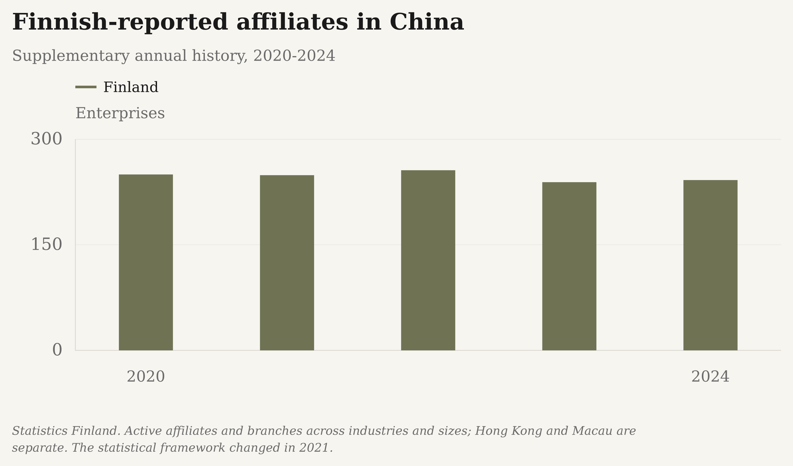
Statistics Finland. Active affiliates and branches, all sizes/industries; not unique parents. 2021: EBS methodology boundary. Earlier matching national counts unavailable; the longer Eurostat population is separate. Hong Kong and Macau separate.
Download reported values as a high-resolution PNG or editable SVG:
- The Margin of Error: PNG (3000 × 1800) · SVG
- Substack: PNG (3000 × 1800) · SVG


Exact reported and plotted values
| Series | Year / ending year | Reported count | Enterprises | Status | Source vintage |
|---|---|---|---|---|---|
| Finland | 2020 | 250 | 250.0000 | observed | StatFin 13k8; reference years 2020-2024 |
| Finland | 2021 | 249 | 249.0000 | observed | StatFin 13k8; reference years 2020-2024 |
| Finland | 2022 | 256 | 256.0000 | observed | StatFin 13k8; reference years 2020-2024 |
| Finland | 2023 | 239 | 239.0000 | observed | StatFin 13k8; reference years 2020-2024 |
| Finland | 2024 | 242 | 242.0000 | observed | StatFin 13k8; reference years 2020-2024 |
French-controlled enterprises in China
China except Hong Kong | Eurostat, 2007-2023
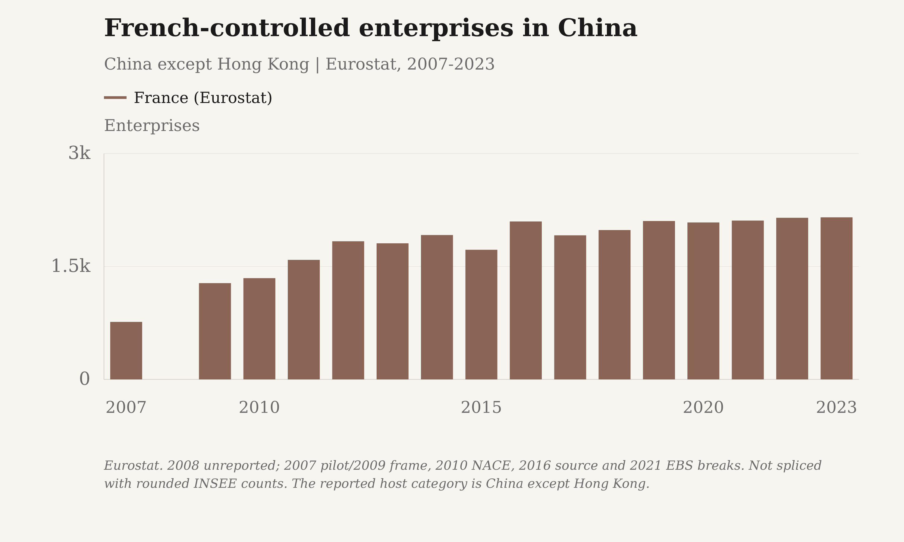
Eurostat. 2008 unreported; 2007 pilot/2009 frame, 2010 NACE, 2016 source and 2021 EBS breaks. Not spliced with rounded INSEE counts. The reported host category is China except Hong Kong.
Download reported values as a high-resolution PNG or editable SVG:
- The Margin of Error: PNG (3000 × 1800) · SVG
- Substack: PNG (3000 × 1800) · SVG


Exact reported and plotted values
| Series | Year / ending year | Reported count | Enterprises | Status | Source vintage |
|---|---|---|---|---|---|
| France (Eurostat) | 2007 | 764 | 764.0000 | observed | fats_out2; France; source updated 2024-04-25T11:00:00+0200 |
| France (Eurostat) | 2009 | 1,279 | 1,279.0000 | observed | fats_out2; France; source updated 2024-04-25T11:00:00+0200 |
| France (Eurostat) | 2010 | 1,345 | 1,345.0000 | observed | fats_out2_r2; France; source updated 2024-04-25T11:00:00+0200 |
| France (Eurostat) | 2011 | 1,588 | 1,588.0000 | observed | fats_out2_r2; France; source updated 2024-04-25T11:00:00+0200 |
| France (Eurostat) | 2012 | 1,835 | 1,835.0000 | observed | fats_out2_r2; France; source updated 2024-04-25T11:00:00+0200 |
| France (Eurostat) | 2013 | 1,808 | 1,808.0000 | observed | fats_out2_r2; France; source updated 2024-04-25T11:00:00+0200 |
| France (Eurostat) | 2014 | 1,918 | 1,918.0000 | observed | fats_out2_r2; France; source updated 2024-04-25T11:00:00+0200 |
| France (Eurostat) | 2015 | 1,722 | 1,722.0000 | observed | fats_out2_r2; France; source updated 2024-04-25T11:00:00+0200 |
| France (Eurostat) | 2016 | 2,098 | 2,098.0000 | observed | fats_out2_r2; France; source updated 2024-04-25T11:00:00+0200 |
| France (Eurostat) | 2017 | 1,914 | 1,914.0000 | observed | fats_out2_r2; France; source updated 2024-04-25T11:00:00+0200 |
| France (Eurostat) | 2018 | 1,984 | 1,984.0000 | observed | fats_out2_r2; France; source updated 2024-04-25T11:00:00+0200 |
| France (Eurostat) | 2019 | 2,104 | 2,104.0000 | observed | fats_out2_r2; France; source updated 2024-04-25T11:00:00+0200 |
| France (Eurostat) | 2020 | 2,085 | 2,085.0000 | observed | fats_out2_r2; France; source updated 2024-04-25T11:00:00+0200 |
| France (Eurostat) | 2021 | 2,110 | 2,110.0000 | observed | fats_out_part; France; source updated 2026-03-31T23:00:00+0200 |
| France (Eurostat) | 2022 | 2,147 | 2,147.0000 | observed | fats_out_part; France; source updated 2026-03-31T23:00:00+0200 |
| France (Eurostat) | 2023 | 2,153 | 2,153.0000 | observed | fats_out_part; France; source updated 2026-03-31T23:00:00+0200 |
Dutch-controlled enterprises in China
China except Hong Kong | 2007-2024 | 2024 provisional
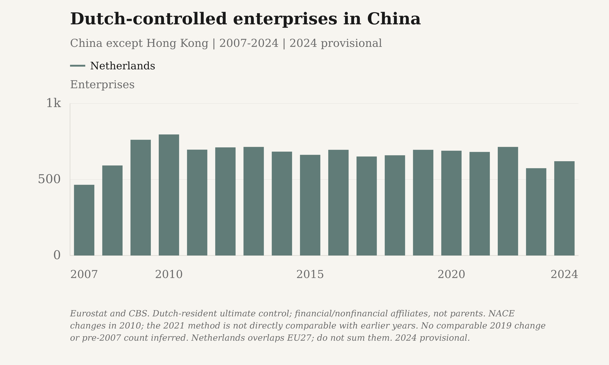
Eurostat and CBS. Dutch-resident ultimate control; financial/nonfinancial affiliates, not parents. NACE changes in 2010; the 2021 method is not directly comparable with earlier years. No comparable 2019 change or pre-2007 count inferred. Netherlands overlaps EU27; do not sum them.
Download reported values as a high-resolution PNG or editable SVG:
- The Margin of Error: PNG (3000 × 1800) · SVG
- Substack: PNG (3000 × 1800) · SVG


Exact reported and plotted values
| Series | Year / ending year | Reported count | Enterprises | Status | Source vintage |
|---|---|---|---|---|---|
| Netherlands | 2007 | 465 | 465.0000 | observed | Outward FATS - main variables (2007-2009); updated 2024-04-25T11:00:00+0200 |
| Netherlands | 2008 | 592 | 592.0000 | observed | Outward FATS - main variables (2007-2009); updated 2024-04-25T11:00:00+0200 |
| Netherlands | 2009 | 761 | 761.0000 | observed | Outward FATS - main variables (2007-2009); updated 2024-04-25T11:00:00+0200 |
| Netherlands | 2010 | 796 | 796.0000 | observed | Outward FATS, main variables - NACE Rev. 2 activity (2010-2020); updated 2024-04-25T11:00:00+0200 |
| Netherlands | 2011 | 696 | 696.0000 | observed | Outward FATS, main variables - NACE Rev. 2 activity (2010-2020); updated 2024-04-25T11:00:00+0200 |
| Netherlands | 2012 | 711 | 711.0000 | observed | Outward FATS, main variables - NACE Rev. 2 activity (2010-2020); updated 2024-04-25T11:00:00+0200 |
| Netherlands | 2013 | 714 | 714.0000 | observed | Outward FATS, main variables - NACE Rev. 2 activity (2010-2020); updated 2024-04-25T11:00:00+0200 |
| Netherlands | 2014 | 683 | 683.0000 | observed | Outward FATS, main variables - NACE Rev. 2 activity (2010-2020); updated 2024-04-25T11:00:00+0200 |
| Netherlands | 2015 | 662 | 662.0000 | observed | Outward FATS, main variables - NACE Rev. 2 activity (2010-2020); updated 2024-04-25T11:00:00+0200 |
| Netherlands | 2016 | 695 | 695.0000 | observed | Outward FATS, main variables - NACE Rev. 2 activity (2010-2020); updated 2024-04-25T11:00:00+0200 |
| Netherlands | 2017 | 651 | 651.0000 | observed | Outward FATS, main variables - NACE Rev. 2 activity (2010-2020); updated 2024-04-25T11:00:00+0200 |
| Netherlands | 2018 | 659 | 659.0000 | observed | Outward FATS, main variables - NACE Rev. 2 activity (2010-2020); updated 2024-04-25T11:00:00+0200 |
| Netherlands | 2019 | 695 | 695.0000 | observed | Outward FATS, main variables - NACE Rev. 2 activity (2010-2020); updated 2024-04-25T11:00:00+0200 |
| Netherlands | 2020 | 689 | 689.0000 | observed | Outward FATS, main variables - NACE Rev. 2 activity (2010-2020); updated 2024-04-25T11:00:00+0200 |
| Netherlands | 2021 | 681 | 681.0000 | observed | Foreign affiliates of the EU enterprises by detailed breakdown of country of the affiliates (from 2021 onwards); updated 2026-03-31T23:00:00+0200 |
| Netherlands | 2022 | 714 | 714.0000 | observed | Foreign affiliates of the EU enterprises by detailed breakdown of country of the affiliates (from 2021 onwards); updated 2026-03-31T23:00:00+0200 |
| Netherlands | 2023 | 574 | 574.0000 | observed | Foreign affiliates of the EU enterprises by detailed breakdown of country of the affiliates (from 2021 onwards); updated 2026-03-31T23:00:00+0200 |
| Netherlands | 2024 | 620 | 620.0000 | provisional | Nederland Handelsland 2026; 2024 preliminary |
Finnish-controlled enterprises: the longer history
China except Hong Kong | Eurostat, 2007-2023
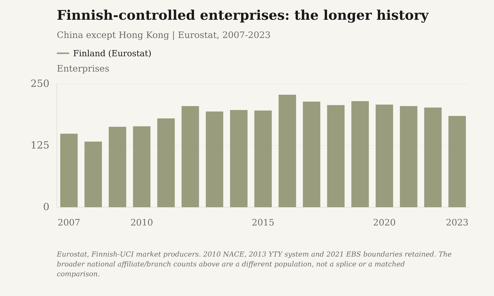
Eurostat, Finnish-UCI market producers. 2010 NACE, 2013 YTY system and 2021 EBS boundaries retained. The broader national affiliate/branch counts above are a different population, not a splice or a matched comparison.
Download reported values as a high-resolution PNG or editable SVG:
- The Margin of Error: PNG (3000 × 1800) · SVG
- Substack: PNG (3000 × 1800) · SVG


Exact reported and plotted values
| Series | Year / ending year | Reported count | Enterprises | Status | Source vintage |
|---|---|---|---|---|---|
| Finland (Eurostat) | 2007 | 149 | 149.0000 | observed | fats_out2; Finland; source updated 2024-04-25T11:00:00+0200 |
| Finland (Eurostat) | 2008 | 133 | 133.0000 | observed | fats_out2; Finland; source updated 2024-04-25T11:00:00+0200 |
| Finland (Eurostat) | 2009 | 163 | 163.0000 | observed | fats_out2; Finland; source updated 2024-04-25T11:00:00+0200 |
| Finland (Eurostat) | 2010 | 164 | 164.0000 | observed | fats_out2_r2; Finland; source updated 2024-04-25T11:00:00+0200 |
| Finland (Eurostat) | 2011 | 180 | 180.0000 | observed | fats_out2_r2; Finland; source updated 2024-04-25T11:00:00+0200 |
| Finland (Eurostat) | 2012 | 205 | 205.0000 | observed | fats_out2_r2; Finland; source updated 2024-04-25T11:00:00+0200 |
| Finland (Eurostat) | 2013 | 194 | 194.0000 | observed | fats_out2_r2; Finland; source updated 2024-04-25T11:00:00+0200 |
| Finland (Eurostat) | 2014 | 197 | 197.0000 | observed | fats_out2_r2; Finland; source updated 2024-04-25T11:00:00+0200 |
| Finland (Eurostat) | 2015 | 196 | 196.0000 | observed | fats_out2_r2; Finland; source updated 2024-04-25T11:00:00+0200 |
| Finland (Eurostat) | 2016 | 228 | 228.0000 | observed | fats_out2_r2; Finland; source updated 2024-04-25T11:00:00+0200 |
| Finland (Eurostat) | 2017 | 214 | 214.0000 | observed | fats_out2_r2; Finland; source updated 2024-04-25T11:00:00+0200 |
| Finland (Eurostat) | 2018 | 207 | 207.0000 | observed | fats_out2_r2; Finland; source updated 2024-04-25T11:00:00+0200 |
| Finland (Eurostat) | 2019 | 215 | 215.0000 | observed | fats_out2_r2; Finland; source updated 2024-04-25T11:00:00+0200 |
| Finland (Eurostat) | 2020 | 208 | 208.0000 | observed | fats_out2_r2; Finland; source updated 2024-04-25T11:00:00+0200 |
| Finland (Eurostat) | 2021 | 205 | 205.0000 | observed | fats_out_part; Finland; source updated 2026-03-31T23:00:00+0200 |
| Finland (Eurostat) | 2022 | 202 | 202.0000 | observed | fats_out_part; Finland; source updated 2026-03-31T23:00:00+0200 |
| Finland (Eurostat) | 2023 | 185 | 185.0000 | observed | fats_out_part; Finland; source updated 2026-03-31T23:00:00+0200 |
Italian-controlled legal units in China
Legal-unit history, 2007-2023 | Eurostat / ISTAT
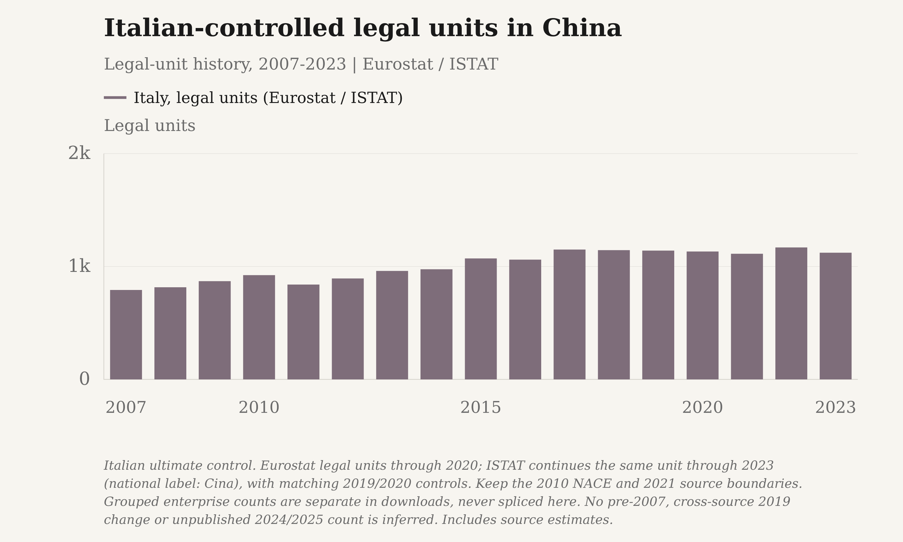
Italian ultimate control. Eurostat legal units through 2020; ISTAT continues the same unit through 2023 (national label: Cina), with matching 2019/2020 controls. Keep the 2010 NACE and 2021 source boundaries. Grouped enterprise counts are separate in downloads, never spliced here. No pre-2007, cross-source 2019 change or unpublished 2024/2025 count is inferred.
Download reported values as a high-resolution PNG or editable SVG:
- The Margin of Error: PNG (3000 × 1800) · SVG
- Substack: PNG (3000 × 1800) · SVG


Exact reported and plotted values
| Series | Year / ending year | Reported count | Legal units | Status | Source vintage |
|---|---|---|---|---|---|
| Italy, legal units (Eurostat / ISTAT) | 2007 | 792 | 792.0000 | estimated | fats_out2; Italy; source updated 2024-04-25T11:00:00+0200 |
| Italy, legal units (Eurostat / ISTAT) | 2008 | 816 | 816.0000 | estimated | fats_out2; Italy; source updated 2024-04-25T11:00:00+0200 |
| Italy, legal units (Eurostat / ISTAT) | 2009 | 870 | 870.0000 | estimated | fats_out2; Italy; source updated 2024-04-25T11:00:00+0200 |
| Italy, legal units (Eurostat / ISTAT) | 2010 | 923 | 923.0000 | estimated | fats_out2_r2; Italy; source updated 2024-04-25T11:00:00+0200 |
| Italy, legal units (Eurostat / ISTAT) | 2011 | 840 | 840.0000 | estimated | fats_out2_r2; Italy; source updated 2024-04-25T11:00:00+0200 |
| Italy, legal units (Eurostat / ISTAT) | 2012 | 894 | 894.0000 | estimated | fats_out2_r2; Italy; source updated 2024-04-25T11:00:00+0200 |
| Italy, legal units (Eurostat / ISTAT) | 2013 | 961 | 961.0000 | estimated | fats_out2_r2; Italy; source updated 2024-04-25T11:00:00+0200 |
| Italy, legal units (Eurostat / ISTAT) | 2014 | 975 | 975.0000 | estimated | fats_out2_r2; Italy; source updated 2024-04-25T11:00:00+0200 |
| Italy, legal units (Eurostat / ISTAT) | 2015 | 1,071 | 1,071.0000 | estimated | fats_out2_r2; Italy; source updated 2024-04-25T11:00:00+0200 |
| Italy, legal units (Eurostat / ISTAT) | 2016 | 1,061 | 1,061.0000 | estimated | fats_out2_r2; Italy; source updated 2024-04-25T11:00:00+0200 |
| Italy, legal units (Eurostat / ISTAT) | 2017 | 1,150 | 1,150.0000 | estimated | fats_out2_r2; Italy; source updated 2024-04-25T11:00:00+0200 |
| Italy, legal units (Eurostat / ISTAT) | 2018 | 1,145 | 1,145.0000 | estimated | fats_out2_r2; Italy; source updated 2024-04-25T11:00:00+0200 |
| Italy, legal units (Eurostat / ISTAT) | 2019 | 1,141 | 1,141.0000 | estimated | fats_out2_r2; Italy; source updated 2024-04-25T11:00:00+0200 |
| Italy, legal units (Eurostat / ISTAT) | 2020 | 1,133 | 1,133.0000 | estimated | fats_out2_r2; Italy; source updated 2024-04-25T11:00:00+0200 |
| Italy, legal units (Eurostat / ISTAT) | 2021 | 1,113 | 1,113.0000 | estimated | ISTAT-ICE 2024 yearbook; reference 2021 |
| Italy, legal units (Eurostat / ISTAT) | 2022 | 1,169 | 1,169.0000 | estimated | ISTAT-ICE 2025 yearbook; reference 2022 |
| Italy, legal units (Eurostat / ISTAT) | 2023 | 1,122 | 1,122.0000 | estimated | ISTAT-ICE 2026 yearbook; reference 2023 |
Swedish-controlled enterprises: the longer history
China except Hong Kong | Eurostat, 2007-2023
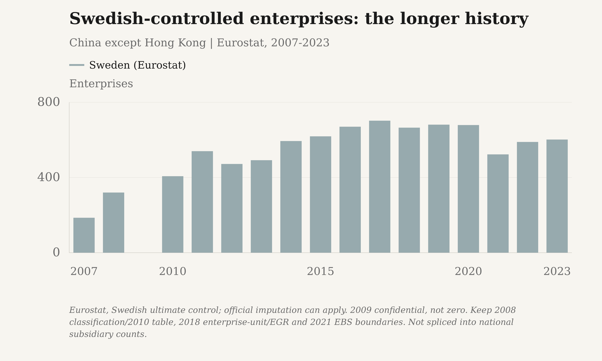
Eurostat, Swedish ultimate control; official imputation can apply. 2009 confidential, not zero. Keep 2008 classification/2010 table, 2018 enterprise-unit/EGR and 2021 EBS boundaries. Not spliced into national subsidiary counts.
Download reported values as a high-resolution PNG or editable SVG:
- The Margin of Error: PNG (3000 × 1800) · SVG
- Substack: PNG (3000 × 1800) · SVG


Exact reported and plotted values
| Series | Year / ending year | Reported count | Enterprises | Status | Source vintage |
|---|---|---|---|---|---|
| Sweden (Eurostat) | 2007 | 186 | 186.0000 | observed | fats_out2; Sweden; source updated 2024-04-25T11:00:00+0200 |
| Sweden (Eurostat) | 2008 | 320 | 320.0000 | observed | fats_out2; Sweden; source updated 2024-04-25T11:00:00+0200 |
| Sweden (Eurostat) | 2010 | 407 | 407.0000 | observed | fats_out2_r2; Sweden; source updated 2024-04-25T11:00:00+0200 |
| Sweden (Eurostat) | 2011 | 540 | 540.0000 | observed | fats_out2_r2; Sweden; source updated 2024-04-25T11:00:00+0200 |
| Sweden (Eurostat) | 2012 | 472 | 472.0000 | observed | fats_out2_r2; Sweden; source updated 2024-04-25T11:00:00+0200 |
| Sweden (Eurostat) | 2013 | 492 | 492.0000 | observed | fats_out2_r2; Sweden; source updated 2024-04-25T11:00:00+0200 |
| Sweden (Eurostat) | 2014 | 594 | 594.0000 | observed | fats_out2_r2; Sweden; source updated 2024-04-25T11:00:00+0200 |
| Sweden (Eurostat) | 2015 | 619 | 619.0000 | observed | fats_out2_r2; Sweden; source updated 2024-04-25T11:00:00+0200 |
| Sweden (Eurostat) | 2016 | 670 | 670.0000 | observed | fats_out2_r2; Sweden; source updated 2024-04-25T11:00:00+0200 |
| Sweden (Eurostat) | 2017 | 702 | 702.0000 | observed | fats_out2_r2; Sweden; source updated 2024-04-25T11:00:00+0200 |
| Sweden (Eurostat) | 2018 | 665 | 665.0000 | observed | fats_out2_r2; Sweden; source updated 2024-04-25T11:00:00+0200 |
| Sweden (Eurostat) | 2019 | 681 | 681.0000 | observed | fats_out2_r2; Sweden; source updated 2024-04-25T11:00:00+0200 |
| Sweden (Eurostat) | 2020 | 679 | 679.0000 | observed | fats_out2_r2; Sweden; source updated 2024-04-25T11:00:00+0200 |
| Sweden (Eurostat) | 2021 | 523 | 523.0000 | observed | fats_out_part; Sweden; source updated 2026-03-31T23:00:00+0200 |
| Sweden (Eurostat) | 2022 | 589 | 589.0000 | observed | fats_out_part; Sweden; source updated 2026-03-31T23:00:00+0200 |
| Sweden (Eurostat) | 2023 | 602 | 602.0000 | observed | fats_out_part; Sweden; source updated 2026-03-31T23:00:00+0200 |
Spanish-controlled enterprises in China
China except Hong Kong | Reported counts from 2009
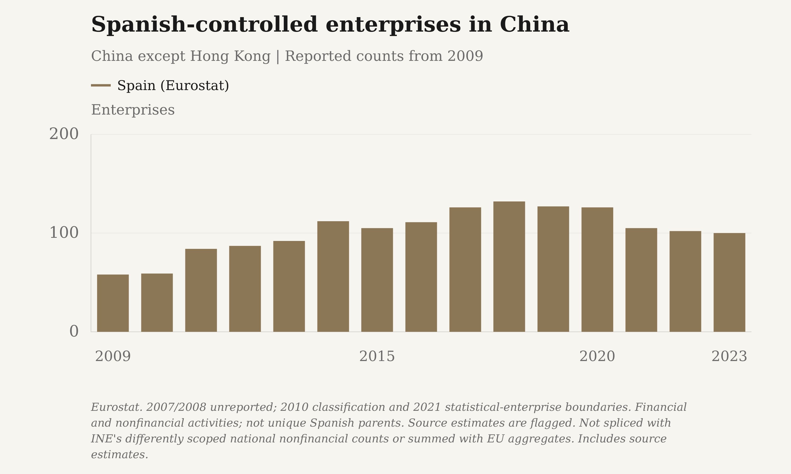
Eurostat. 2007/2008 unreported; 2010 classification and 2021 statistical-enterprise boundaries. Financial and nonfinancial activities; not unique Spanish parents. Source estimates are flagged. Not spliced with INE's differently scoped national nonfinancial counts or summed with EU aggregates.
Download reported values as a high-resolution PNG or editable SVG:
- The Margin of Error: PNG (3000 × 1800) · SVG
- Substack: PNG (3000 × 1800) · SVG


Exact reported and plotted values
| Series | Year / ending year | Reported count | Enterprises | Status | Source vintage |
|---|---|---|---|---|---|
| Spain (Eurostat) | 2009 | 58 | 58.0000 | observed | fats_out2; Spain; source updated 2024-04-25T11:00:00+0200 |
| Spain (Eurostat) | 2010 | 59 | 59.0000 | observed | fats_out2_r2; Spain; source updated 2024-04-25T11:00:00+0200 |
| Spain (Eurostat) | 2011 | 84 | 84.0000 | observed | fats_out2_r2; Spain; source updated 2024-04-25T11:00:00+0200 |
| Spain (Eurostat) | 2012 | 87 | 87.0000 | observed | fats_out2_r2; Spain; source updated 2024-04-25T11:00:00+0200 |
| Spain (Eurostat) | 2013 | 92 | 92.0000 | observed | fats_out2_r2; Spain; source updated 2024-04-25T11:00:00+0200 |
| Spain (Eurostat) | 2014 | 112 | 112.0000 | observed | fats_out2_r2; Spain; source updated 2024-04-25T11:00:00+0200 |
| Spain (Eurostat) | 2015 | 105 | 105.0000 | observed | fats_out2_r2; Spain; source updated 2024-04-25T11:00:00+0200 |
| Spain (Eurostat) | 2016 | 111 | 111.0000 | observed | fats_out2_r2; Spain; source updated 2024-04-25T11:00:00+0200 |
| Spain (Eurostat) | 2017 | 126 | 126.0000 | observed | fats_out2_r2; Spain; source updated 2024-04-25T11:00:00+0200 |
| Spain (Eurostat) | 2018 | 132 | 132.0000 | observed | fats_out2_r2; Spain; source updated 2024-04-25T11:00:00+0200 |
| Spain (Eurostat) | 2019 | 127 | 127.0000 | observed | fats_out2_r2; Spain; source updated 2024-04-25T11:00:00+0200 |
| Spain (Eurostat) | 2020 | 126 | 126.0000 | observed | fats_out2_r2; Spain; source updated 2024-04-25T11:00:00+0200 |
| Spain (Eurostat) | 2021 | 105 | 105.0000 | observed | fats_out_part; Spain; source updated 2026-03-31T23:00:00+0200 |
| Spain (Eurostat) | 2022 | 102 | 102.0000 | estimated | fats_out_part; Spain; source updated 2026-03-31T23:00:00+0200 |
| Spain (Eurostat) | 2023 | 100 | 100.0000 | estimated | fats_out_part; Spain; source updated 2026-03-31T23:00:00+0200 |
Subsidiaries controlled from Denmark
China | National series from 2007
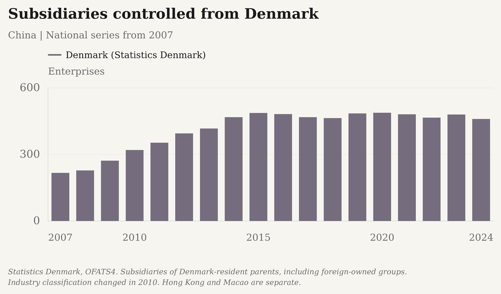
Statistics Denmark, OFATS4. Denmark-resident parents include foreign ultimate owners; not Danish-UCI Eurostat counts. Subsidiary entities, not parents, plants or branches. 2010 DB03/DB07 classification transition; Hong Kong and Macao separate. No pre-2007 values inferred; no sum with overlapping EU aggregates.
Download reported values as a high-resolution PNG or editable SVG:
- The Margin of Error: PNG (3000 × 1800) · SVG
- Substack: PNG (3000 × 1800) · SVG


Exact reported and plotted values
| Series | Year / ending year | Reported count | Enterprises | Status | Source vintage |
|---|---|---|---|---|---|
| Denmark (Statistics Denmark) | 2007 | 217 | 217.0000 | observed | OFATS4; source updated 2026-01-20T07:00:00Z |
| Denmark (Statistics Denmark) | 2008 | 228 | 228.0000 | observed | OFATS4; source updated 2026-01-20T07:00:00Z |
| Denmark (Statistics Denmark) | 2009 | 272 | 272.0000 | observed | OFATS4; source updated 2026-01-20T07:00:00Z |
| Denmark (Statistics Denmark) | 2010 | 320 | 320.0000 | observed | OFATS4; source updated 2026-01-20T07:00:00Z |
| Denmark (Statistics Denmark) | 2011 | 353 | 353.0000 | observed | OFATS4; source updated 2026-01-20T07:00:00Z |
| Denmark (Statistics Denmark) | 2012 | 395 | 395.0000 | observed | OFATS4; source updated 2026-01-20T07:00:00Z |
| Denmark (Statistics Denmark) | 2013 | 417 | 417.0000 | observed | OFATS4; source updated 2026-01-20T07:00:00Z |
| Denmark (Statistics Denmark) | 2014 | 468 | 468.0000 | observed | OFATS4; source updated 2026-01-20T07:00:00Z |
| Denmark (Statistics Denmark) | 2015 | 487 | 487.0000 | observed | OFATS4; source updated 2026-01-20T07:00:00Z |
| Denmark (Statistics Denmark) | 2016 | 482 | 482.0000 | observed | OFATS4; source updated 2026-01-20T07:00:00Z |
| Denmark (Statistics Denmark) | 2017 | 468 | 468.0000 | observed | OFATS4; source updated 2026-01-20T07:00:00Z |
| Denmark (Statistics Denmark) | 2018 | 464 | 464.0000 | observed | OFATS4; source updated 2026-01-20T07:00:00Z |
| Denmark (Statistics Denmark) | 2019 | 485 | 485.0000 | observed | OFATS4; source updated 2026-01-20T07:00:00Z |
| Denmark (Statistics Denmark) | 2020 | 488 | 488.0000 | observed | OFATS4; source updated 2026-01-20T07:00:00Z |
| Denmark (Statistics Denmark) | 2021 | 481 | 481.0000 | observed | OFATS4; source updated 2026-01-20T07:00:00Z |
| Denmark (Statistics Denmark) | 2022 | 466 | 466.0000 | observed | OFATS4; source updated 2026-01-20T07:00:00Z |
| Denmark (Statistics Denmark) | 2023 | 480 | 480.0000 | observed | OFATS4; source updated 2026-01-20T07:00:00Z |
| Denmark (Statistics Denmark) | 2024 | 460 | 460.0000 | observed | OFATS4; source updated 2026-01-20T07:00:00Z |
What companies are saying now
Recent member-company findings, not a count of every foreign business. The American and German chambers ask different questions and must not be read as a country ranking.
AmCham Shanghai respondents
AmCham Shanghai / PwC | September 2026 publication
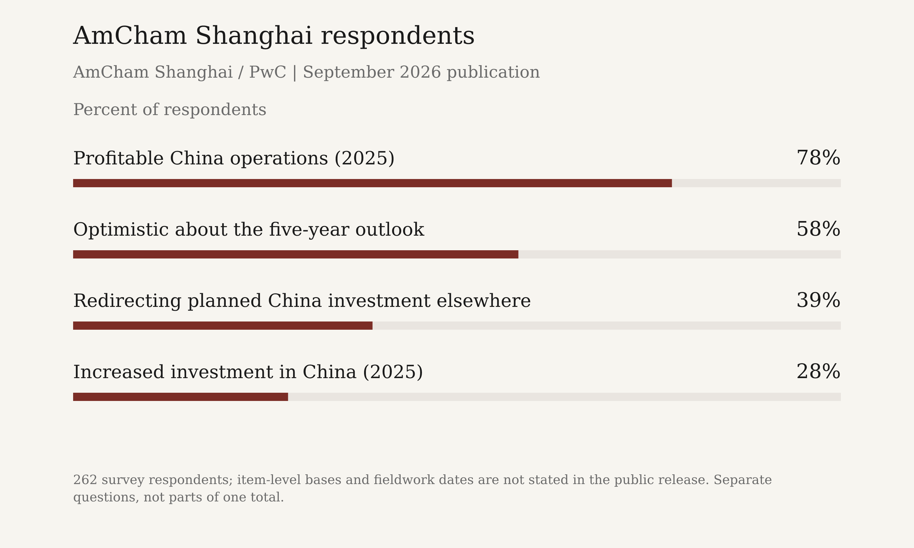
262 survey respondents; item-level bases and fieldwork dates are not stated in the public release. Separate questions, not parts of one total.
Primary source · Published 2026-09-10
Download reported values as a high-resolution PNG or editable SVG:
- The Margin of Error: PNG (3000 × 1800) · SVG
- Substack: PNG (3000 × 1800) · SVG


German member-company trade exposure
German Chamber | Preliminary release, 6 October 2026
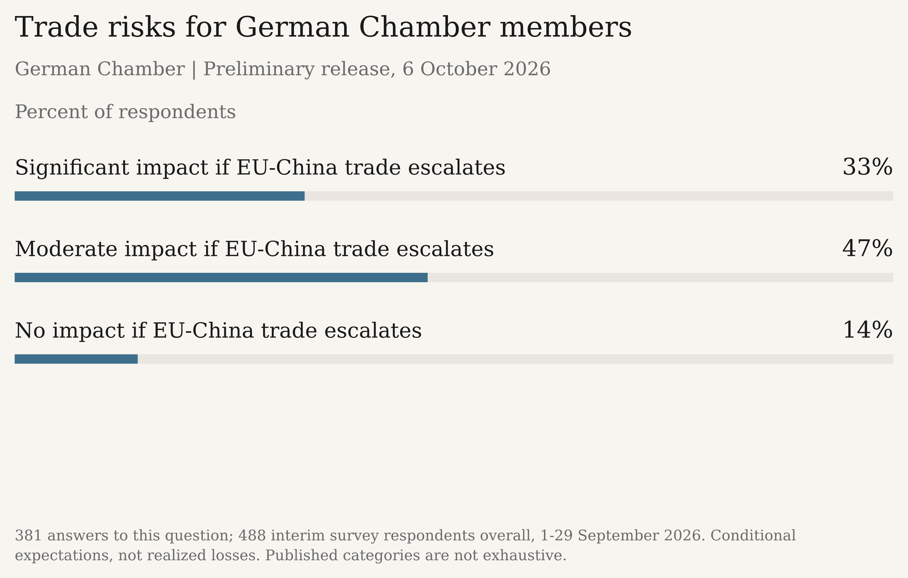
381 answers to this question; 488 interim survey respondents overall, 1-29 September 2026. Conditional expectations, not realized losses. Published categories are not exhaustive.
Primary source · Published 2026-10-06
Download reported values as a high-resolution PNG or editable SVG:
- The Margin of Error: PNG (3000 × 1800) · SVG
- Substack: PNG (3000 × 1800) · SVG


The German finding is not an EU-wide survey. Its full report is scheduled for 7 December 2026; only the published preliminary question is shown here.
Earlier U.S., German and Norwegian count references
Previously available source histories, not newly recovered current evidence. The U.S. outward count still ends in 2023 and does not supply 2024/2025 counts. German sources have different reporting populations and remain separate. These reference histories are not a matched country ranking.
U.S.-parent affiliates in China
Previously available reference: latest period 2023. U.S. Bureau of Economic Analysis; 2009-2023 selected-data workbook; 2023 fiscal year.
Earlier reference | 2000-2023 | fiscal year ending
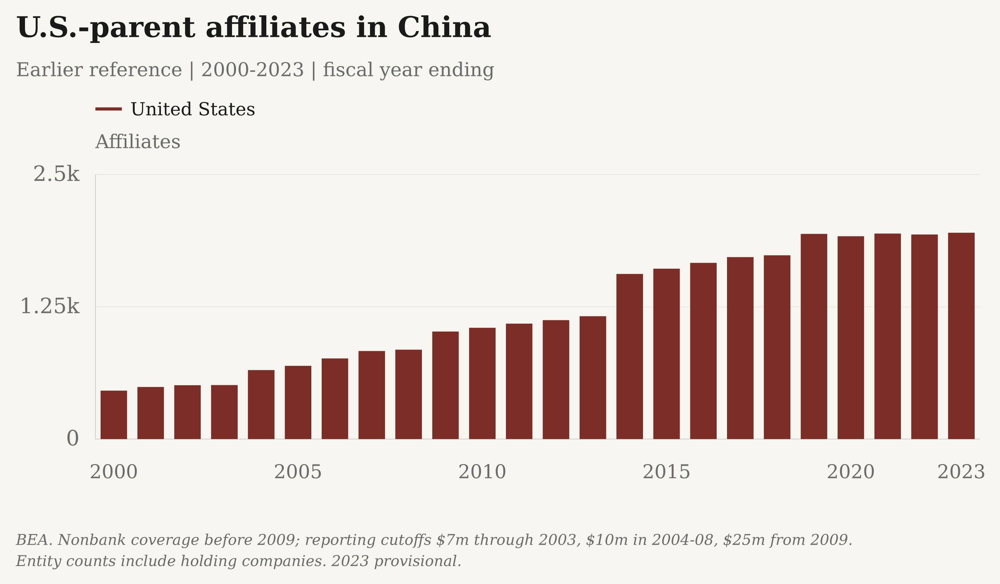
BEA. Nonbank coverage before 2009; reporting cutoffs $7m through 2003, $10m in 2004-08, $25m from 2009. Benchmark boundaries disconnected. Entity counts include holding companies, not all firms or offices.
Download reported values as a high-resolution PNG or editable SVG:
- The Margin of Error: PNG (3000 × 1800) · SVG
- Substack: PNG (3000 × 1800) · SVG


Exact reported and plotted values
| Series | Year / ending year | Reported count | Affiliates | Status | Source vintage |
|---|---|---|---|---|---|
| United States | 2000 | 458 | 458.0000 | observed | Revised 2000 operations; historical benchmark regime |
| United States | 2001 | 492 | 492.0000 | observed | Revised 2001 operations; historical benchmark regime |
| United States | 2002 | 509 | 509.0000 | observed | Revised 2002 operations; historical benchmark regime |
| United States | 2003 | 510 | 510.0000 | observed | Revised 2003 operations; historical benchmark regime |
| United States | 2004 | 652 | 652.0000 | observed | Revised 2004 operations; historical benchmark regime |
| United States | 2005 | 692 | 692.0000 | observed | Revised 2005 operations; historical benchmark regime |
| United States | 2006 | 762 | 762.0000 | observed | Revised 2006 operations; historical benchmark regime |
| United States | 2007 | 832 | 832.0000 | observed | Revised 2007 operations; historical benchmark regime |
| United States | 2008 | 845 | 845.0000 | observed | Revised 2008 operations; historical benchmark regime |
| United States | 2009 | 1,016 | 1,016.0000 | observed | 2009-2023 selected-data workbook; 2009 fiscal year |
| United States | 2010 | 1,052 | 1,052.0000 | observed | 2009-2023 selected-data workbook; 2010 fiscal year |
| United States | 2011 | 1,091 | 1,091.0000 | observed | 2009-2023 selected-data workbook; 2011 fiscal year |
| United States | 2012 | 1,124 | 1,124.0000 | observed | 2009-2023 selected-data workbook; 2012 fiscal year |
| United States | 2013 | 1,161 | 1,161.0000 | observed | 2009-2023 selected-data workbook; 2013 fiscal year |
| United States | 2014 | 1,561 | 1,561.0000 | observed | 2009-2023 selected-data workbook; 2014 fiscal year |
| United States | 2015 | 1,610 | 1,610.0000 | observed | 2009-2023 selected-data workbook; 2015 fiscal year |
| United States | 2016 | 1,665 | 1,665.0000 | observed | 2009-2023 selected-data workbook; 2016 fiscal year |
| United States | 2017 | 1,720 | 1,720.0000 | observed | 2009-2023 selected-data workbook; 2017 fiscal year |
| United States | 2018 | 1,737 | 1,737.0000 | observed | 2009-2023 selected-data workbook; 2018 fiscal year |
| United States | 2019 | 1,939 | 1,939.0000 | observed | 2009-2023 selected-data workbook; 2019 fiscal year |
| United States | 2020 | 1,917 | 1,917.0000 | observed | 2009-2023 selected-data workbook; 2020 fiscal year |
| United States | 2021 | 1,942 | 1,942.0000 | observed | 2009-2023 selected-data workbook; 2021 fiscal year |
| United States | 2022 | 1,934 | 1,934.0000 | observed | 2009-2023 selected-data workbook; 2022 fiscal year |
| United States | 2023 | 1,950 | 1,950.0000 | provisional | 2009-2023 selected-data workbook; 2023 fiscal year |
Norwegian-controlled enterprises in China
Previously available reference: latest period 2024. Statistics Norway; Table 09827; updated 2025-12-17T07:00:00Z.
Earlier reference | From 2008 | Statistics Norway
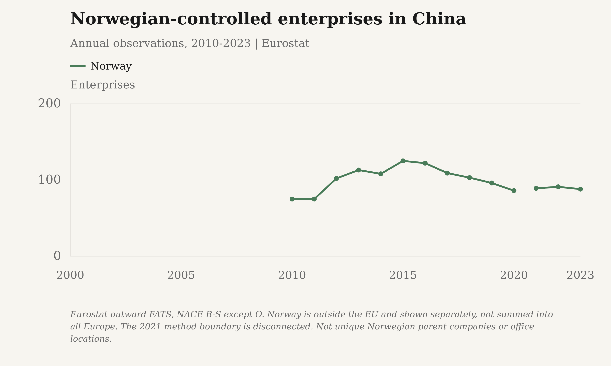
Statistics Norway, all industries. Direct or indirect Norwegian control; Hong Kong and Macao reported separately. This full source history replaces the narrower Eurostat view, not just its last year. Norway is outside the EU; counts are enterprises, not Norwegian parents or office locations.
Download reported values as a high-resolution PNG or editable SVG:
- The Margin of Error: PNG (3000 × 1800) · SVG
- Substack: PNG (3000 × 1800) · SVG


Exact reported and plotted values
| Series | Year / ending year | Reported count | Enterprises | Status | Source vintage |
|---|---|---|---|---|---|
| Norway | 2008 | 46 | 46.0000 | observed | Table 09827; updated 2025-12-17T07:00:00Z |
| Norway | 2009 | 57 | 57.0000 | observed | Table 09827; updated 2025-12-17T07:00:00Z |
| Norway | 2010 | 76 | 76.0000 | observed | Table 09827; updated 2025-12-17T07:00:00Z |
| Norway | 2011 | 77 | 77.0000 | observed | Table 09827; updated 2025-12-17T07:00:00Z |
| Norway | 2012 | 103 | 103.0000 | observed | Table 09827; updated 2025-12-17T07:00:00Z |
| Norway | 2013 | 115 | 115.0000 | observed | Table 09827; updated 2025-12-17T07:00:00Z |
| Norway | 2014 | 109 | 109.0000 | observed | Table 09827; updated 2025-12-17T07:00:00Z |
| Norway | 2015 | 126 | 126.0000 | observed | Table 09827; updated 2025-12-17T07:00:00Z |
| Norway | 2016 | 123 | 123.0000 | observed | Table 09827; updated 2025-12-17T07:00:00Z |
| Norway | 2017 | 110 | 110.0000 | observed | Table 09827; updated 2025-12-17T07:00:00Z |
| Norway | 2018 | 104 | 104.0000 | observed | Table 09827; updated 2025-12-17T07:00:00Z |
| Norway | 2019 | 97 | 97.0000 | observed | Table 09827; updated 2025-12-17T07:00:00Z |
| Norway | 2020 | 93 | 93.0000 | observed | Table 09827; updated 2025-12-17T07:00:00Z |
| Norway | 2021 | 91 | 91.0000 | observed | Table 09827; updated 2025-12-17T07:00:00Z |
| Norway | 2022 | 92 | 92.0000 | observed | Table 09827; updated 2025-12-17T07:00:00Z |
| Norway | 2023 | 89 | 89.0000 | observed | Table 09827; updated 2025-12-17T07:00:00Z |
| Norway | 2024 | 80 | 80.0000 | observed | Table 09827; updated 2025-12-17T07:00:00Z |
German-controlled enterprises in China
Previously available reference: latest period 2024. Deutsche Bundesbank; Outward FATS workbook; reference years 2021-2024.
Earlier reference | Bundesbank | 2021-2024
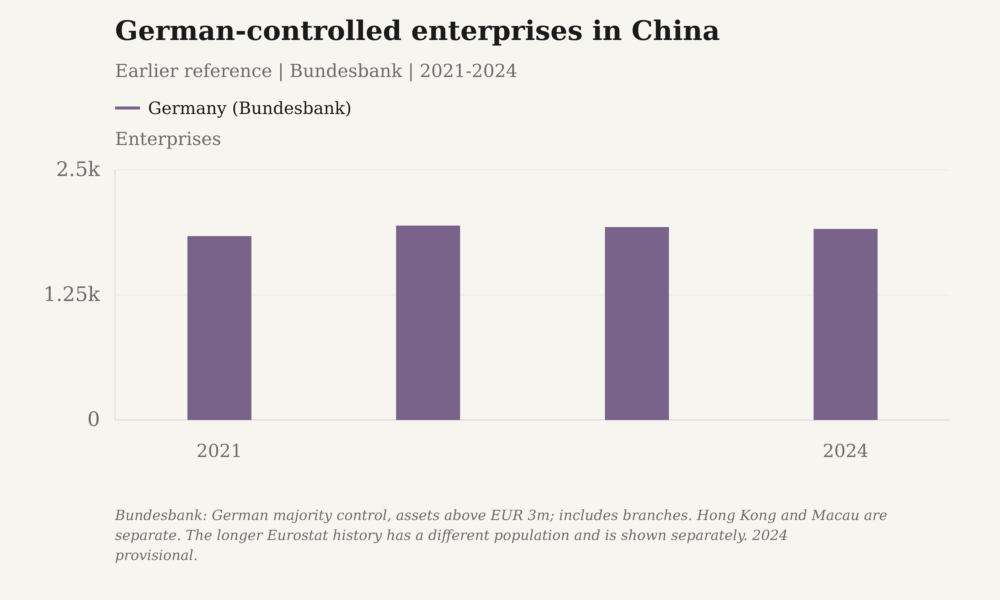
Bundesbank: German majority control, assets above EUR 3m; includes branches. Hong Kong and Macau are separate. The longer Eurostat history has a different population and is shown separately.
Download reported values as a high-resolution PNG or editable SVG:
- The Margin of Error: PNG (3000 × 1800) · SVG
- Substack: PNG (3000 × 1800) · SVG


Exact reported and plotted values
| Series | Year / ending year | Reported count | Enterprises | Status | Source vintage |
|---|---|---|---|---|---|
| Germany (Bundesbank) | 2021 | 1,839 | 1,839.0000 | observed | Outward FATS workbook; reference years 2021-2024 |
| Germany (Bundesbank) | 2022 | 1,944 | 1,944.0000 | observed | Outward FATS workbook; reference years 2021-2024 |
| Germany (Bundesbank) | 2023 | 1,929 | 1,929.0000 | observed | Outward FATS workbook; reference years 2021-2024 |
| Germany (Bundesbank) | 2024 | 1,911 | 1,911.0000 | provisional | Outward FATS workbook; reference years 2021-2024 |
German enterprises: the longer Eurostat history
Previously available reference: latest period 2023. Eurostat; fats_out_part; Germany reporting country.
Earlier reference | Eurostat | 2010-2023
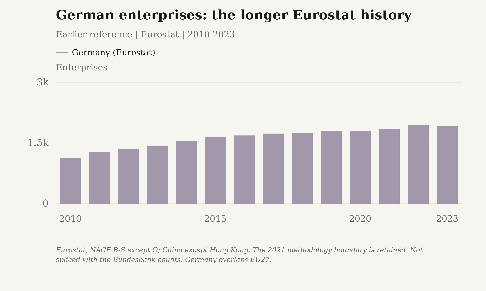
Eurostat, NACE B-S except O; China except Hong Kong. The 2021 methodology boundary is retained. Not spliced with the Bundesbank counts; Germany overlaps EU27.
Download reported values as a high-resolution PNG or editable SVG:
- The Margin of Error: PNG (3000 × 1800) · SVG
- Substack: PNG (3000 × 1800) · SVG


Exact reported and plotted values
| Series | Year / ending year | Reported count | Enterprises | Status | Source vintage |
|---|---|---|---|---|---|
| Germany (Eurostat) | 2010 | 1,137 | 1,137.0000 | observed | fats_out2_r2; Germany reporting country |
| Germany (Eurostat) | 2011 | 1,275 | 1,275.0000 | observed | fats_out2_r2; Germany reporting country |
| Germany (Eurostat) | 2012 | 1,363 | 1,363.0000 | observed | fats_out2_r2; Germany reporting country |
| Germany (Eurostat) | 2013 | 1,437 | 1,437.0000 | observed | fats_out2_r2; Germany reporting country |
| Germany (Eurostat) | 2014 | 1,547 | 1,547.0000 | observed | fats_out2_r2; Germany reporting country |
| Germany (Eurostat) | 2015 | 1,646 | 1,646.0000 | observed | fats_out2_r2; Germany reporting country |
| Germany (Eurostat) | 2016 | 1,688 | 1,688.0000 | observed | fats_out2_r2; Germany reporting country |
| Germany (Eurostat) | 2017 | 1,735 | 1,735.0000 | observed | fats_out2_r2; Germany reporting country |
| Germany (Eurostat) | 2018 | 1,743 | 1,743.0000 | observed | fats_out2_r2; Germany reporting country |
| Germany (Eurostat) | 2019 | 1,807 | 1,807.0000 | observed | fats_out2_r2; Germany reporting country |
| Germany (Eurostat) | 2020 | 1,793 | 1,793.0000 | observed | fats_out2_r2; Germany reporting country |
| Germany (Eurostat) | 2021 | 1,850 | 1,850.0000 | observed | fats_out_part; Germany reporting country |
| Germany (Eurostat) | 2022 | 1,951 | 1,951.0000 | observed | fats_out_part; Germany reporting country |
| Germany (Eurostat) | 2023 | 1,921 | 1,921.0000 | observed | fats_out_part; Germany reporting country |
Data, sources & historical archive
Complete current evidence and provenance · JSON · Every current observation · CSV · Every plotted value · CSV
| Measure | Reference period | Reported value | Unit |
|---|---|---|---|
| Mainland China | 31 December 2000 | 11,140,000,000 | USD |
| Hong Kong | 31 December 2000 | 27,447,000,000 | USD |
| Mainland China | 31 December 2001 | 12,081,000,000 | USD |
| Hong Kong | 31 December 2001 | 32,494,000,000 | USD |
| Mainland China | 31 December 2002 | 10,570,000,000 | USD |
| Hong Kong | 31 December 2002 | 40,329,000,000 | USD |
| Mainland China | 31 December 2003 | 11,261,000,000 | USD |
| Hong Kong | 31 December 2003 | 36,426,000,000 | USD |
| Mainland China | 31 December 2004 | 17,616,000,000 | USD |
| Hong Kong | 31 December 2004 | 32,735,000,000 | USD |
| Mainland China | 31 December 2005 | 19,016,000,000 | USD |
| Hong Kong | 31 December 2005 | 36,415,000,000 | USD |
| Mainland China | 31 December 2006 | 26,459,000,000 | USD |
| Hong Kong | 31 December 2006 | 39,636,000,000 | USD |
| Mainland China | 31 December 2007 | 29,710,000,000 | USD |
| Hong Kong | 31 December 2007 | 40,720,000,000 | USD |
| Mainland China | 31 December 2008 | 53,927,000,000 | USD |
| Hong Kong | 31 December 2008 | 40,042,000,000 | USD |
| Mainland China | 31 December 2009 | 54,069,000,000 | USD |
| Hong Kong | 31 December 2009 | 50,720,000,000 | USD |
| Mainland China | 31 December 2010 | 58,996,000,000 | USD |
| Hong Kong | 31 December 2010 | 41,264,000,000 | USD |
| Mainland China | 31 December 2011 | 53,661,000,000 | USD |
| Hong Kong | 31 December 2011 | 46,713,000,000 | USD |
| Mainland China | 31 December 2012 | 54,514,000,000 | USD |
| Hong Kong | 31 December 2012 | 56,086,000,000 | USD |
| Mainland China | 31 December 2013 | 60,454,000,000 | USD |
| Hong Kong | 31 December 2013 | 56,785,000,000 | USD |
| Mainland China | 31 December 2014 | 82,244,000,000 | USD |
| Hong Kong | 31 December 2014 | 64,741,000,000 | USD |
| Mainland China | 31 December 2015 | 92,150,000,000 | USD |
| Hong Kong | 31 December 2015 | 69,367,000,000 | USD |
| Mainland China | 31 December 2016 | 97,458,000,000 | USD |
| Hong Kong | 31 December 2016 | 69,287,000,000 | USD |
| Mainland China | 31 December 2017 | 105,146,000,000 | USD |
| Hong Kong | 31 December 2017 | 79,048,000,000 | USD |
| Mainland China | 31 December 2018 | 107,557,000,000 | USD |
| Hong Kong | 31 December 2018 | 81,215,000,000 | USD |
| Mainland China | 31 December 2019 | 109,348,000,000 | USD |
| Hong Kong | 31 December 2019 | 97,788,000,000 | USD |
| Mainland China | 31 December 2020 | 116,508,000,000 | USD |
| Hong Kong | 31 December 2020 | 94,495,000,000 | USD |
| Mainland China | 31 December 2021 | 116,003,000,000 | USD |
| Hong Kong | 31 December 2021 | 92,664,000,000 | USD |
| Mainland China | 31 December 2022 | 116,314,000,000 | USD |
| Hong Kong | 31 December 2022 | 94,666,000,000 | USD |
| Mainland China | 31 December 2023 | 116,454,000,000 | USD |
| Hong Kong | 31 December 2023 | 91,372,000,000 | USD |
| Mainland China | 31 December 2024 | 112,018,000,000 | USD |
| Hong Kong | 31 December 2024 | 99,795,000,000 | USD |
| Mainland China | 31 December 2025 | 120,547,000,000 | USD |
| Hong Kong | 31 December 2025 | 103,737,000,000 | USD |
| Profitable China operations (2025) | 2025 performance, reported in the 2026 survey | 78 | percent |
| Optimistic about the five-year outlook | Outlook reported in the 2026 survey | 58 | percent |
| Redirecting planned China investment elsewhere | Investment plans reported in the 2026 survey | 39 | percent |
| Increased investment in China (2025) | 2025 investment, reported in the 2026 survey | 28 | percent |
| Significant impact if EU-China trade escalates | Conditional expectations; interim responses 1-29 September 2026 | 33 | percent |
| Moderate impact if EU-China trade escalates | Conditional expectations; interim responses 1-29 September 2026 | 47 | percent |
| No impact if EU-China trade escalates | Conditional expectations; interim responses 1-29 September 2026 | 14 | percent |
Primary sources
- German Chamber of Commerce in China, 2026/27 preliminary finding · 2026-10-06. Pre-Result, 6 October 2026: result and methodology. Interim responses through 29 September, not the completed survey. German findings translated into English. Full release announced for 7 December 2026, still future at review.
- Source asset · retrieved 2026-10-24T22:02:38+00:00 · SHA-256
f37be7410fe5ea38e02608a1a966e6a92af0cac7e6c7d8a0515ee1ffa49e3469
- Source asset · retrieved 2026-10-24T22:02:38+00:00 · SHA-256
- AmCham Shanghai / PwC China, 2026 China Business Report public release · 2026-09-10. Public findings and methodology paragraph. Page metadata says 9 September; the press-release dateline is 10 September. Captured through the normal unauthenticated JavaScript-rendered public website. No member-only report retrieved.
- Source asset · retrieved 2026-10-24T22:04:01+00:00 · SHA-256
2eb564a034b0a17fb5b7aa04ae873181cd84f49b01056a4fdcd30ac46079290a
- Source asset · retrieved 2026-10-24T22:04:01+00:00 · SHA-256
- U.S. Bureau of Economic Analysis, Direct Investment by Country and Industry, 2025 · 2026-07-21. Annual worksheets 2000-2025; China and Hong Kong rows, All industries column B. Recent totals independently matched to the selected-country Total column. Historical blocks use BEA's currently linked 2000-2009, 2010-2019 and 2020-2025 workbooks, with the exact asset and locator on each observation. The July 2026 release date describes the latest block, not a claim that every historical year was revised then. Source millions converted to nominal USD. Not affiliate counts or annual flows; no 2026 year-end value inferred.
- Source asset · retrieved 2026-10-24T21:59:28+00:00 · SHA-256
95a5977f4b4c64943ab1214bb08bfa9f1b62d6f213cd7a55ee050127fa5be3ba - Source asset · retrieved 2026-10-25T00:22:29+00:00 · SHA-256
daa35998c834031f0617dc6aac9b8a14301e93fcbd53085dc6f692d04d5b7fb9 - Source asset · retrieved 2026-10-25T00:22:37+00:00 · SHA-256
d5eb15f58cb83003a13dce4d7d958069a7c27b2bae1aa3c8393ff0f961638ab8 - Source asset · retrieved 2026-10-25T00:22:39+00:00 · SHA-256
7ceb5842362c2d3eee6fdfae04bc1cf87090d4f1f3ecb7dd40b3bee54d4c53ca - Source asset · retrieved 2026-10-25T00:22:40+00:00 · SHA-256
e127b015eb2d8043560dc10c983fe303c108272e22315b6a0f1f80943ad95c9e - Source asset · retrieved 2026-10-24T21:59:31+00:00 · SHA-256
aae50c66cb82d253ad633e8cc29012fe7eba37c02573f19698a5fbb61410d5cc
- Source asset · retrieved 2026-10-24T21:59:28+00:00 · SHA-256
Complete company-count data
The new country histories and earlier reference histories remain distinct. Older UK/EU and parent-company benchmarks remain download-only; they are not a current business census. Missing years and source/ownership changes remain explicit.
All count data and provenance · JSON · Every count observation · CSV · Every plotted count · CSV